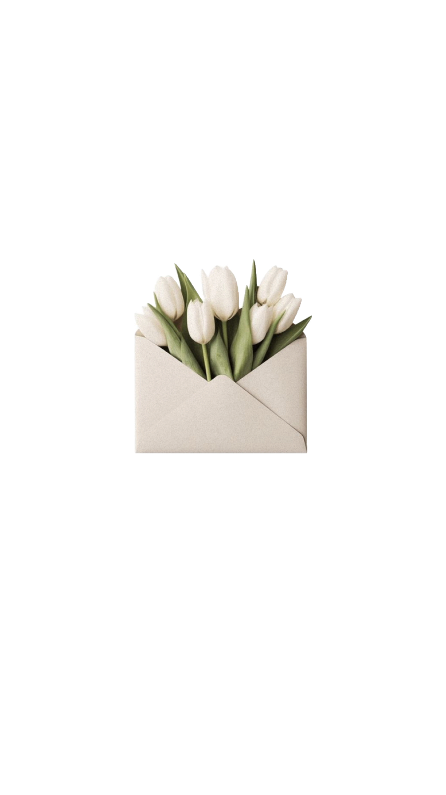
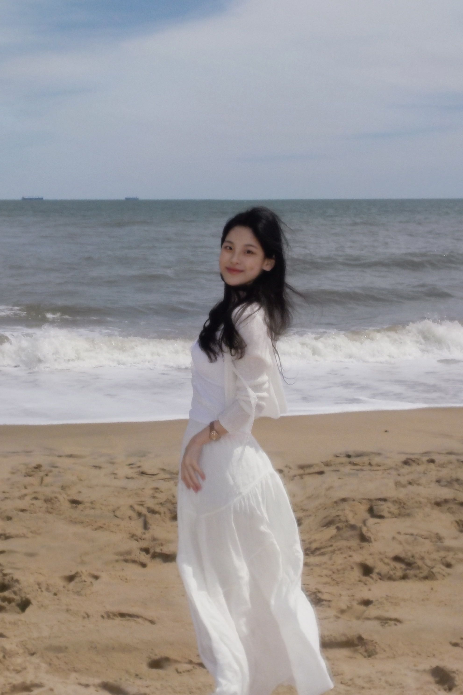

just a moment
[Georgetown University * Economics & Mathematics]
Thanks for dropping by.
I'm currently a student at Georgetown University majoring in Economics and Mathematics and minoring in Theatre and Performance Studies. My intention in my work is to create something artful as much as it is analytical, a theme that has carried my interests across my research, academic growth, and creative work. My latest interests in research lie in the intersection between macroeconomic trends, financial markets, and quantum theory, where my work has been centered mainly on the optimisation of complex systems under constraint and macro-financial structure under policy and geopolitical shifts.
Outside the classroom, I am always seeking to understand the world around me through storymaking: studying relation and interaction through acting; artistic form and meaning through my poetry; and always, grounding myself in service of empathy through reading and film.

